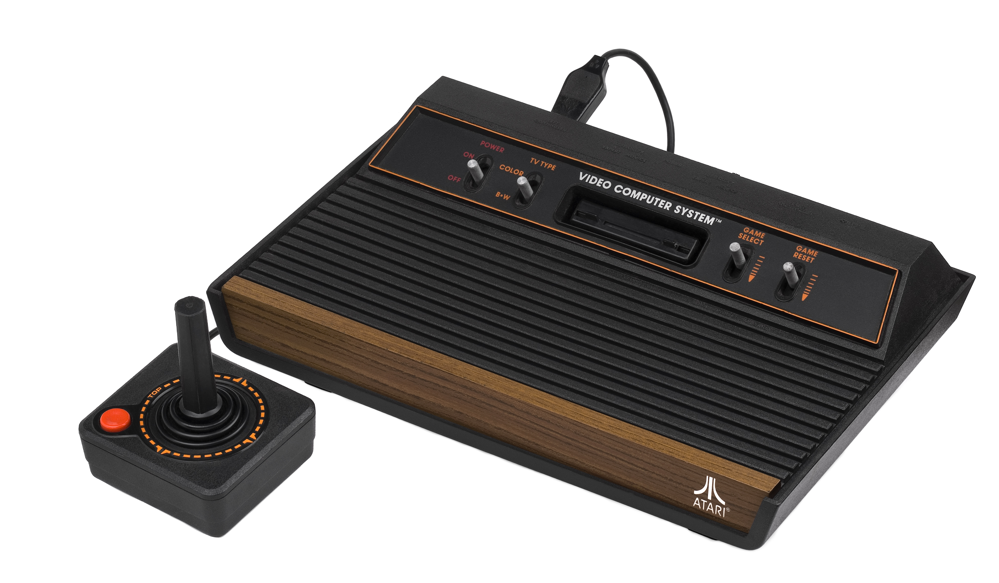
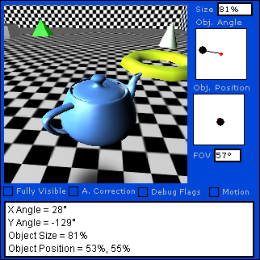

A video game is type of a game that played using a visual user interface (television, monitor, etc.) with a video source that sends an image signal, such as a computer or game console.
Typically, video games use a joystick as an input device, a monitor and speaker as output. With the progress of the technology, much more advanced devices have been released to be used for input and output units. For example, automobile steering systems, aircraft consoles, vibrating joysticks and pedals, etc.
|  |
| The Atari 2600 was the first game console to achieve widespread success and awareness. |
The world's first video game is known as the game played using a cathode ray tube amusement device.
Console games have left their place to computer games in the 90s, but with Sony's PlayStation, the consoles have again started to compete with computers. After PlayStation's release, the competition between "Xbox, Wii, Nintendo Dual Screen, PlayStation" consoles and computers have increased.
The variety of video games is increasing over time. The absolute number of game genres is not known in any real sense, because game designers are trying to create their own genres for capturing an original title.
Some common game types are:
|  |
| Developers use various tools to create video games. Here an editor is fine-tuning the virtual camera system. |
These tools are called game engines and they are designed to relieve game designers while working with million lines of codes. The designer enters some simple commands, meanwhile on the background, the game engine translates these simple commands into complicated codes and finally, the programming language which have used to make the game engine itself translates all these commands into bit format (0-1 system) that only a computer can understand.
Some popular game engines today are:
Video game cheats are "changes" that you can make to your player or other characters by taking advantage of various bugs in games. For example, making a character immortal, equipping it with various weapons, killing a man in one shot, etc. Cheats made to use in online games are considered as a criminal offense and they are usually sold to other online players by creators of cheats.
Some single games have cheats added by the game maker. These cheats are usually activated by writing a predefined keyword phrase.